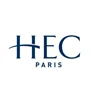

Private Academic & Admissions Office
Elite university placement is not lost on intelligence. It is lost on lack of structured, professional guidance. We help European applicants to competitive economics, finance, and business programs worldwide.
90% of students admitted to one of their top three choices.
Our students apply to some of the world’s most selective programs in Economics, Finance, and Business:

“I knew I was smart and had the potential, but I was completely lost with all the requirements. Once I had a clear plan and support at each step, I could focus my efforts properly. The results followed.”
Result: admission to the London School of Economics (Mathematics and Economics).
— Spanish Resident in Luxembourg
“Effort alone wasn’t enough. What made the difference was structure, feedback, and correcting mistakes early.”
— Applicant form Madrid
“A strong background is always the first thing I take into consideration.”
— Client, on why they chose us.
Families pursuing competitive economics, finance, and business programs today face a set of structural problems that directly affect outcomes. The process is opaque, fragmented, and filled with administrative requirements that families are expected to learn and execute on their own.
This places sustained pressure on families and forces students to devote substantial time to logistics and procedural decisions, often at the expense of academic focus and without clarity on which efforts meaningfully influence results.
Most families are not underprepared intellectually. They lack the clarity on where to direct their efforts, and how to remove all frictions to actually achieve the outcomes they deserve.
How we work
Our work begins with precision, not assumptions.
We do not apply a generic model or a predefined checklist. We assess the specific needs, constraints, and weak points of each student, and we build the process around that reality.
This includes:
- Academic gaps or inconsistencies.
- Testing strategy and readiness.
- Extracurricular direction and credibility.
- Reference selection and positioning.
- Personal constraints related to school, family, or timing.
The objective is not to do more, but to do exactly what is required, in the correct order, with no wasted effort.
Continuous, hands-on management
Once the plan is defined, we remain actively involved throughout execution.
We work alongside the student across all relevant dimensions.
- Translating long-term goals into concrete weekly objectives.
- Clarifying what must be done now and what can wait.
- Identifying when additional academic support is necessary and coordinating it.
- Ensuring extracurricular choices are coherent, credible, and sustainable.
- Preparing and managing the reference process so it is timely and aligned.
Students are not left to self-manage. They are guided, corrected, and supported continuously.
Complete friction removal for parents
For parents, our role is to remove the operational burden entirely.
We take responsibility for:
- All administrative coordination.
- Exam identification, scheduling, and registrations.
- Application portals, documentation, and deadlines.
- Timeline management across institutions and countries.
- Ongoing communication with schools and external parties when needed.
Parents are not required to track deadlines, manage systems, or intervene to keep the process moving. They receive clarity, not tasks.
For a detailed description of our engagement structure, scope, and terms, see our Offerings.